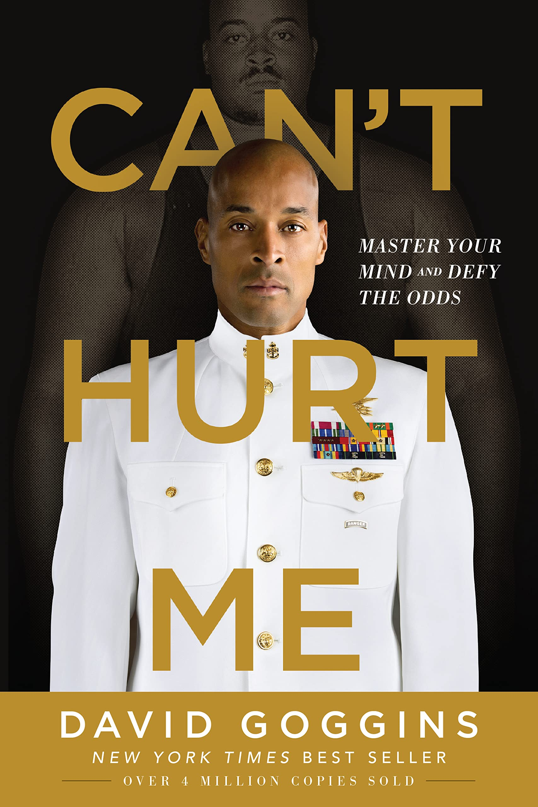

Birth of a New Habit

Has My Perception of this Book Changed?
Reading Elevation has gotten me interested in reading again. In the past, it has been difficult to find a book that I enjoyed, but I solved this issue by choosing reputable authors. After analyzing this book, it made me feel more motivated to continue reading. If I quit reading after this then I would feel like I had lied on my analysis. By analyzing the book I also realized some of its deeper messages. I thought the main message was about living life to the fullest, but the story also involves concepts of making friends despite differences.
What Book Would I Analyze Next?
Just like Elevation, if I were to analyze another book it would be one I haven't read yet. I am reading Fairy Tale by Stephen King, so that would be an option. I also want to read Can't Hurt Me by David Goggins. I have started reading it in the past but I never finished.
My Favorite Multimedia Content Analysis
I enjoyed Multimedia Content Analysis #1 most because it was a new experience. The topic was "a piece of social media content that effectively communicates a message related to identity." This is very broad, which allowed me to find a piece of content that I was passionate about.
My Writing Growth
My writing has grown throughout this semester in terms of creativity. I like that I was encouraged to use multimodal elements for all my assignments. I have improved a lot in multimodal communication, for example, I can make infographics, websites, and videos. I have also improved in plain writing because I had practice with it.